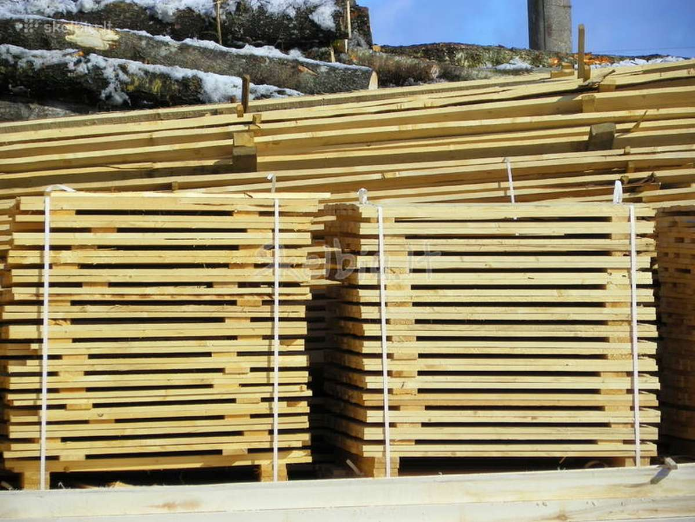

Welcome to mediena
Mediena | Klijuota mediena | Medienios tiekimas | WEXIS.LT
2020.10.29 07:56Skip to content Produktai Langinis tašas Baldiniai skydai Terasinės lentos Sijos – klijuota mediena karkasams Pjautinė mediena Mediena individualiems poreikiams Apie mus Kontaktai 08:00 - 17:00 +370 618 50065
mediena
Mūsų griežti įsipareigojimai sau, leidža klientams pasiūlyti tai, ką jie taip vertina ir dėl ko sugrįžta pas mus.
KLIJUOTA MEDIENA
Langiniai tašai, baldiniai skydai, baldiniai komponentai, sijos, karkasų mediena, terasinės lentos, pjautinė mediena, egzotinė mediena.
MEDIENOS TIEKIMAS
Iš geriausių miškų masyvų bei inovatyviausių technologijų dėka – aukščiausios kokybės klijuota mediena mūsų klientams.
Apie mus
Savo veiklą medienos rinkoje pradėjome 2006 m. ir iki šių dienų ją sėkmingai vystome ir plečiame. Pagrindinė mūsų įmonės veikla yra medienos importas/eksportas bei didmeninė ir mažmeninė langinio tašo , baldinių skydų , terasinių lentų taip pat ir pjautinės medienos prekyba .
Mūsų įmonės struktūra, darbo etika, vertybės leidžia mums būti profesionalia, patikima ir nuoseklia partnere savo klientams. Dedame visas pastangas stengdamiesi prisitaikyti prie klientų pageidavimų bei pasiūlyti naujausius ir pažangiausius medienos produktus rinkoje.
Tik atitinkamu ženklu pažymėta produkcija yra sertifikuota..
MedienA
Susipažinkite su mūsų įmonės tiekiamais produktais. Medieną siūlome įsigyti ir pagal individualius užsakymus.
LANGINIS TAŠAS
ŽIŪRĖTI PRODUKCIJĄBALDINIAI SKYDAI
ŽIŪRĖTI PRODUKCIJĄterasinės lentos
ŽIŪRĖTI PRODUKCIJĄSIJOS – KLIJUOTA MEDIENA KARKASAMS
ŽIŪRĖTI PRODUKCIJĄPJAUTINĖ mediena
ŽIŪRĖTI PRODUKCIJĄMEDIENA INDIVIDUALIEMS POREIKIAMS
ŽIŪRĖTI PRODUKCIJĄKODĖL RINKTIS MUS?
lgametė patirtis ir profesionalumas leidžia mums išlaikyti lyderio pozicijas medienos rinkoje.
PROFESIONALUMAS
PATIKIMUMAS
NUOSEKLUMAS
ATSAKINGUMAS
Susisiekite
Užpildykite žemiau esančią formą ir mes su Jumis susisieksime
Mūsų įmonė „Wexis“ savo veiklą medienos rinkoje pradėjo 2006 m. ir iki šių dienų ją sėkmingai vysto ir plečia. Pagrindinė veikla yra medienos, klijuotos medienos tiekimas, importas ir eksportas.
Privatumo politika
Kontaktai
Telefonas: +370 618 50065
Telefonas: +370 698 38568
El. paštas: info@wexis.lt
Sandėlys: Liepų g. 14, Kluoniškiai, Kauno raj.
Žiūrėti adresą žemėlapyje
Rekvizitai
UAB „Wexis“
Įmonės kodas: 300579689
PVM kodas: LT100002500712
Reg. adresas: Liepų g. 14 Kluoniškiai, Kauno raj.
Visos teisės saugomos 2020 © UAB „Wexis“ | Be sutikimo draudžiama kopijuoti svetainėje esančią informaciją.
Interneto svetainių kūrimas: doPRO agency
Produktai Langinis tašas Baldiniai skydai Terasinės lentos Sijos – klijuota mediena karkasams Pjautinė mediena Mediena individualiems poreikiams Apie mus Kontaktai Sklandžiam svetainės veikimui bei Jūsų naršymo patirties gerinimui naudojame slapukus (angl. „Cookies“). Naršydami mūsų svetainėje toliau, Jūs sutinkate su slapukų naudojimu. Daugiau apie slapukus skaitykite privatumo politikoje. Sutinku